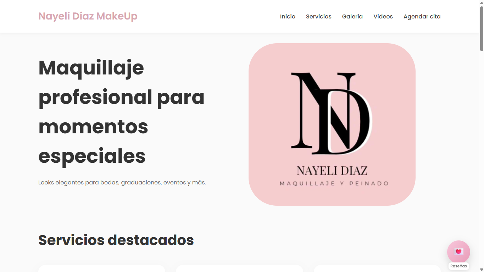

Nayeli Díaz Makeup
Sitio web desarrollado para un negocio de maquillaje profesional. Permite presentar servicios, paquetes, promociones y trabajos realizados, además de administrar el contenido y las galerías multimedia.
PHP
MySQL
JavaScript
HTML
CSS
Ver página web